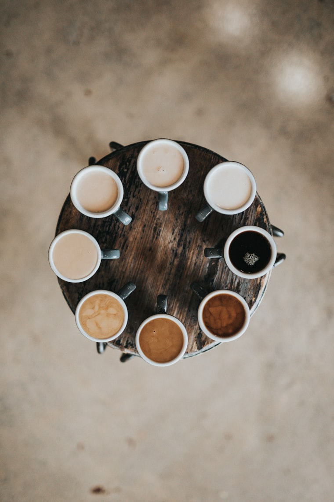

Featured
Milk Matters: Getting Silky Microfoam at Home
The difference between a good flat white and a great one is often the milk. Here's how we steam it at the bar — and how you can get close with a home wand.
Read the Guide